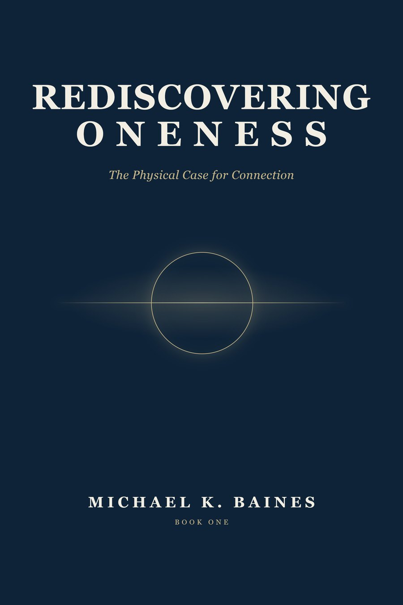
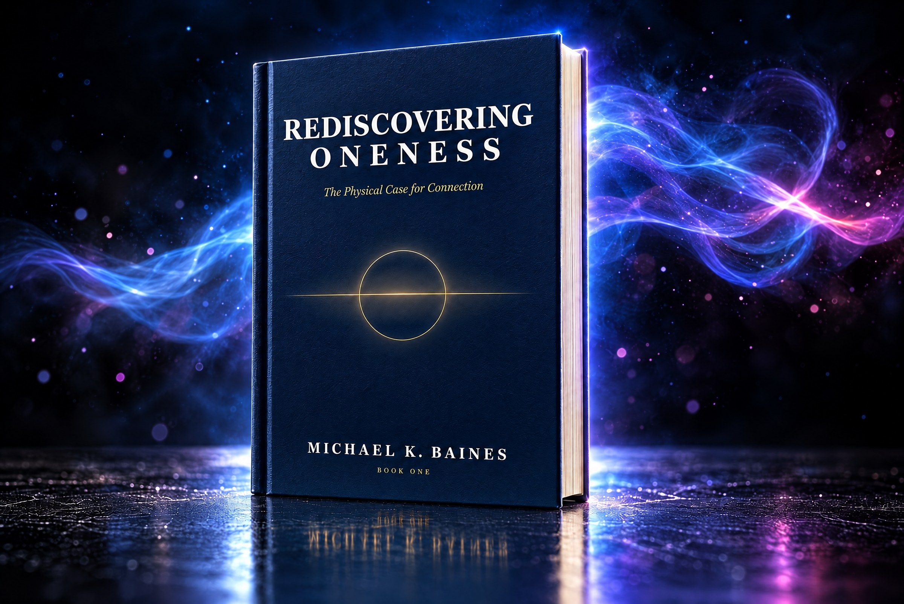

Being written now
Rediscovering Oneness
The Physical Case for Connection. Removes a false belief, and lays bare the truer one beneath it.
New edition
Rediscovering Oneness · New edition
Rediscovering Oneness makes the physical case for connection. Not as a feeling to work toward, but as a measured fact: one skin of air, one turn of water, one family of chemical cycles, and everyone inside it.
It doesn’t ask you to believe anything. It asks you to check.
“A softer and vaguer version of this claim is being sold in many places: that it would be nice if we all felt more connected. That is a wish. The claim here is that we are connected in a load-bearing, chemical, unavoidable sense, and that this is the case before anyone has a feeling about it.”
From Chapter 2, “The Condition”
From the Preface, “Before We Begin”
I didn’t set out to write about oneness. The word, if I’m honest, used to put me off. It arrived wrapped in incense and soft music, promising a feeling I was supposed to work toward, and I wasn’t in the market for a feeling. I was in the market for what was true.
What changed is that I started checking. I’ve spent a working life taking things apart to see whether they held, and at some point I turned that habit on the one thing I’d never once examined: my own separateness. The sense that I end at my skin, that my interests stop where yours begin, that I’m a self-contained unit moving through a world made of other self-contained units. It felt like bedrock. It felt like the plainest fact there is. And it didn’t survive the checking.
That’s the whole of what this book asks you to do. Not to believe anything. To check.
Michael K. BainesOne argument, three ways in. Not a word changed for any of them.
The door you already trust
You’ll never be asked to grant a spiritual premise. The physics is the door we walk through: air, water, atoms, and what the instruments record.
Your tradition, from the inside
You’ll find your own tradition described from the inside, older and deeper than the individualism that got layered over it.
Solid ground under a hunch
If the separateness never felt quite real to you, you’ll find solid ground under what you suspected, without the incense.
★ Two promises
The line between what can be measured and what the author makes of it stays visible on every page. Where a claim is settled, the book says so and points you to where you can check it. Where it is an interpretation, it says so too. And it never reaches past what the evidence will carry.
“The tangible case is stronger than the mystical one anyway. We won’t need the reach.”
Six parts, twelve chapters, from one island in 1722 to the air in your lungs
A Dutch captain had every fact in front of him and still missed what was plainly there
How people lived connection, and what the traditions record
Atoms lent by the stars, a shell with no exit, a self built moment by moment
How the line was drawn: in law, in ledgers, and in minds
What a system with no outside sends back, counted
What was there before the overlay, and what follows from seeing it
Real people, from the record
Landed on Rapa Nui on Easter Sunday, wrote that he had discovered it, and could not see how its people raised the moai.
Often called the earliest author known by name. Your next breath very probably holds at least one atom she breathed.
Lost his suit pressure in a vacuum chamber in Houston, and felt the saliva on his tongue begin to bubble.
Proved that every symmetry of the laws of physics goes with something that is conserved.
Hearing she was to be given away as a wedding gift, she walked out during dinner and made her way to New Hampshire.
Remembered for keeping a light burning above the Ohio River for people escaping slavery across the water.
Answered in the book’s own words where possible
No. It won’t ask you to meditate your way to a higher state, or to take anything on faith, or to trade your skepticism for wonder. If anything it asks the opposite: keep your skepticism, sharpen it, and turn it on the one belief you’ve never thought to question.
No. That version of the argument overreaches, and it is “exactly where books like this go to die.” The book stays with what the evidence carries: shared air, water, matter and history.
No. It is written to be spoken more than studied, the way you’d explain something that mattered to a friend across a table. Technical terms are defined as they come up, and every fact it leans on has a source at the back.
No. It describes the common ground every society stands on. What grows on that ground is for the people living on it to decide. How to live as what you already are is the subject of the companion book, Living Oneness.
This new edition replaces it. The first edition is no longer offered.
An engineer who checked

Michael K. Baines spent thirty-nine years in aerospace engineering, from aircraft systems on business jets to flight-test certification, where every claim about a design is stated in advance and then checked against test data. He writes the same way. He lives in Bangkok, and is also the author of A Quest for The Big TOE and The Adventures of Lemon.
“I’d rather be caught being careful than clever.”
One book. Everything is in it.

The Physical Case for Connection. Removes a false belief, and lays bare the truer one beneath it.
New edition“You were not asked to become one. You were asked to remember that you were never anything else.”
From the Coda, “What Comes Next”
The newsletter
Subscribers get the first chapter of the new edition before anyone else, and first word when the book is out.